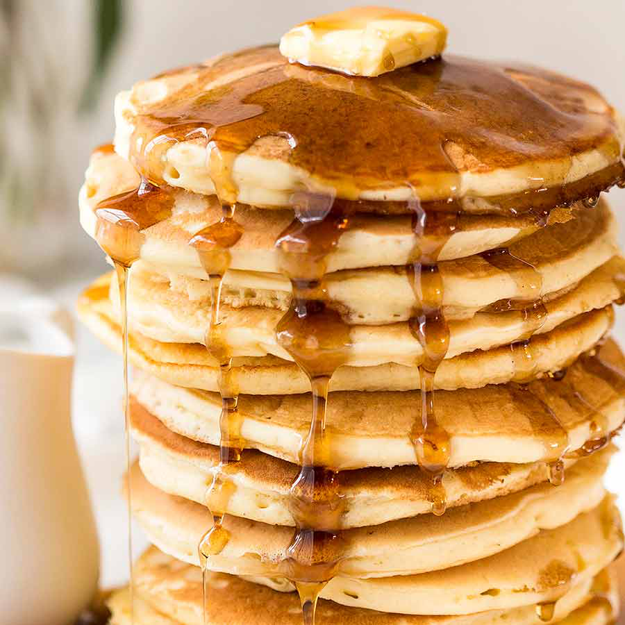

Pancakes

Serves four pancakes recipe
Make some tasty pancakes!
Ingredients:
- 3/4 cup all-purpose flour
- 1/2 tablespoon and 1/4 teaspoon baking powder
- 1/8 teaspoon of salt, or more to taste
- 1/2 tablespoon of white sugar
- 1/2 cup and 2 tablespoons milk
- 1/2 egg
- 1 1/2 tablespoons butter, melted
Steps:
- In a large bowl, sift together the flour, baking powder, salt and sugar. Make a well in the center and pour in
the milk, egg and melted butter; mix until smooth.
- Heat a lightly oiled griddle or frying pan over medium-high heat. Pour or scoop the batter onto the griddle,
using approximately 1/4 cup for each pancake. Brown on both sides and serve hot.